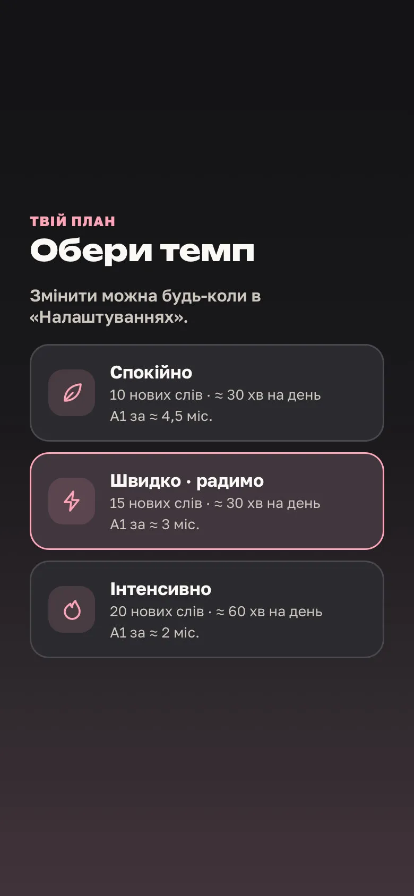
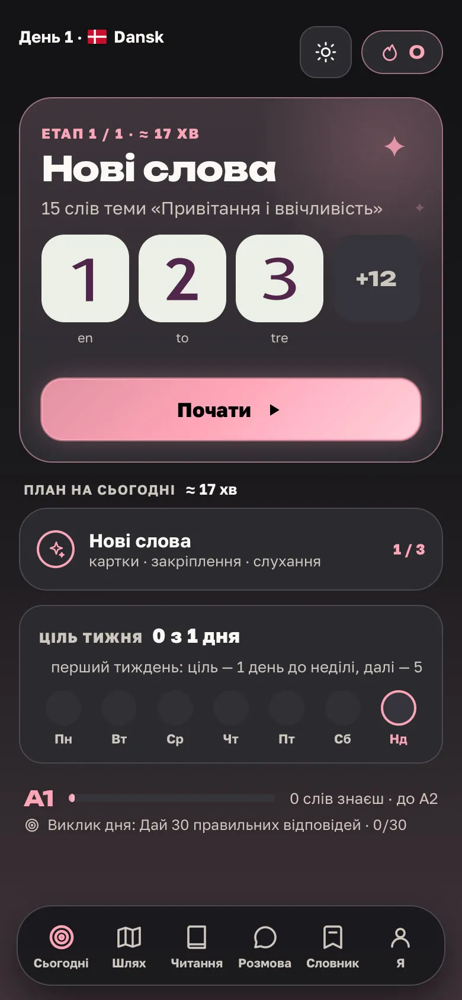

- 01
Обери рівень і темп
Короткий тест покаже, з чого почати. Темп — твій: 10, 15 або 20 нових слів на день.
- 02
Відкрий план дня
Повтор, нові слова, практика, текст або діалог. Крок за кроком — не треба думати, що робити далі.

- 03
Вчи нові слова
Картинка, приклад у реченні й живий голос. Свайп вправо — знаю, вліво — ще ні.
- 04
Помилився — зрозумів
Одразу коротке правило й приклад. Слово повернеться тоді, коли саме час його повторити.